Maya & James
Visit the Bakery
A story about feeling worried — and how a mistake became a recipe
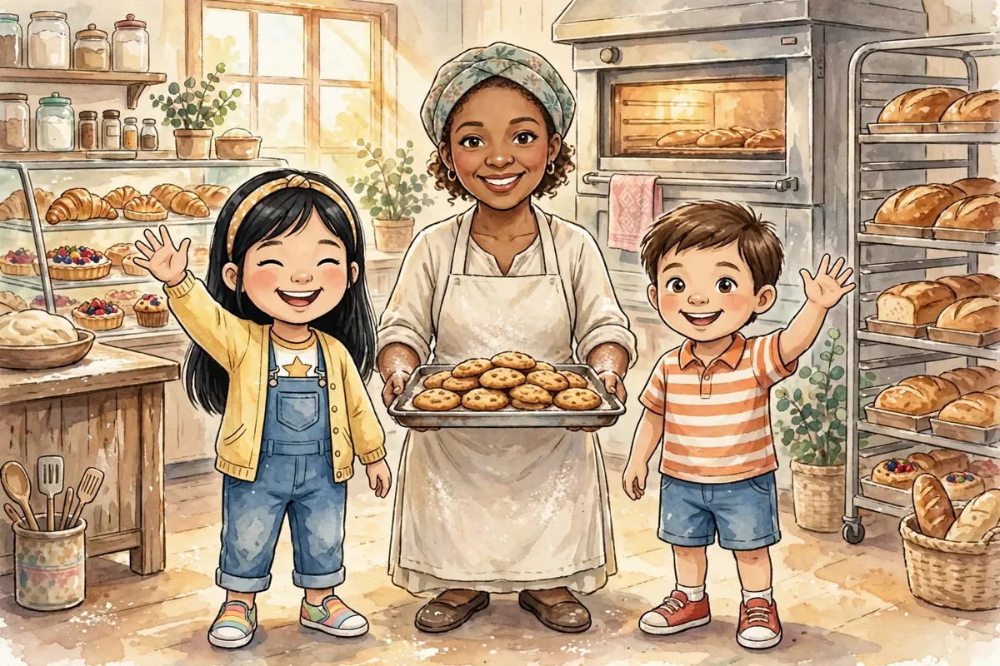
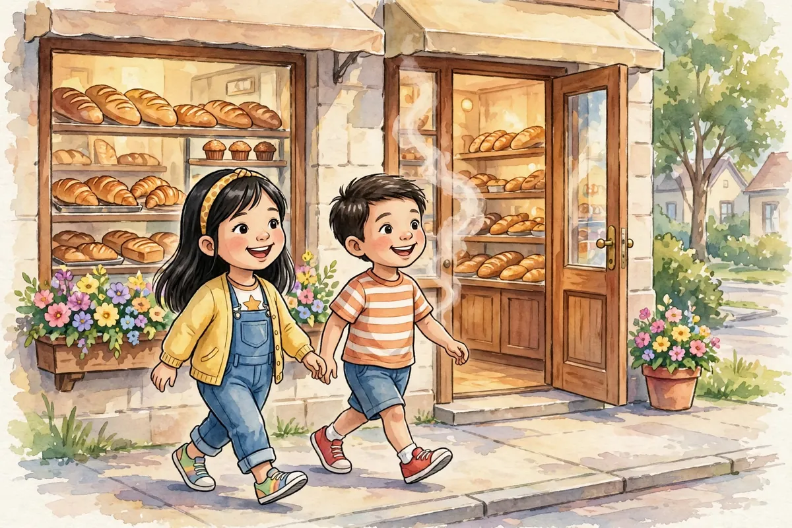
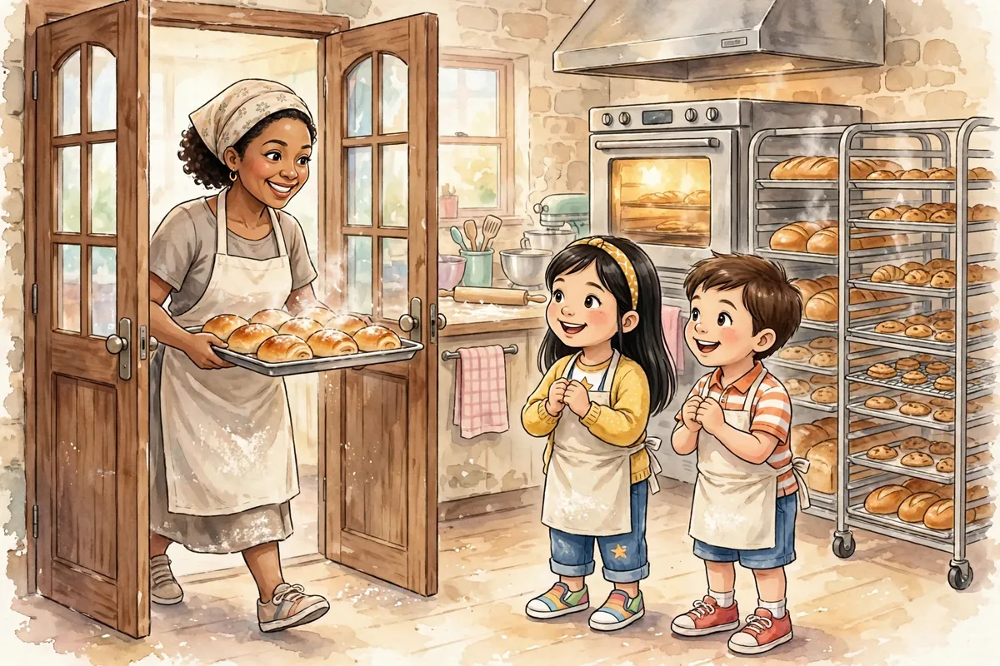
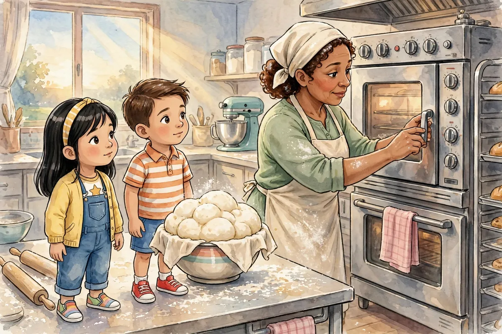
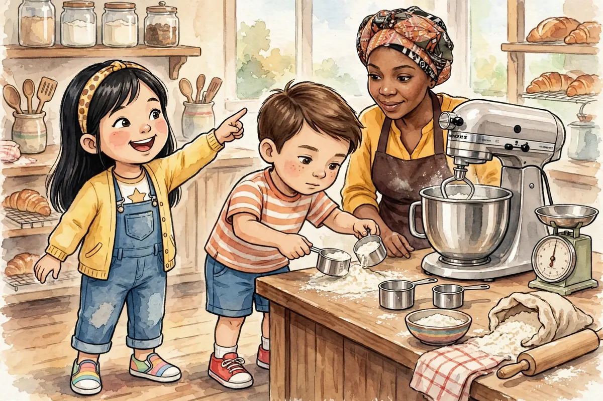
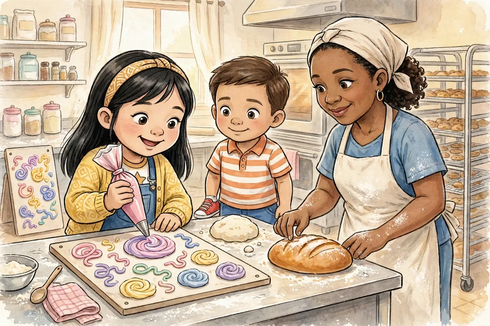
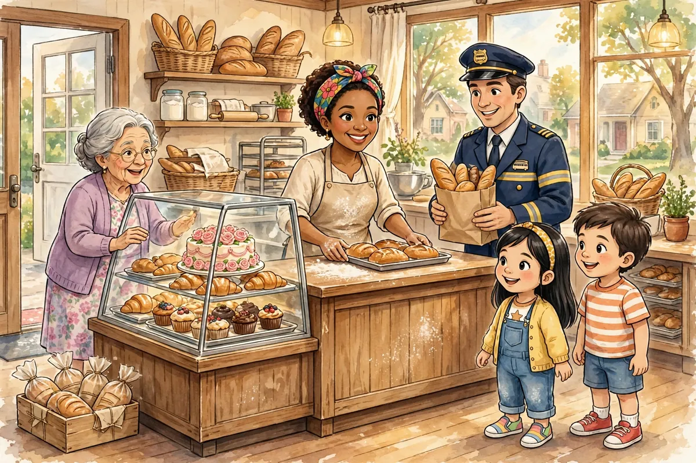
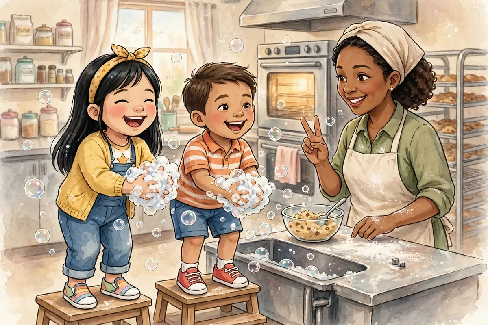
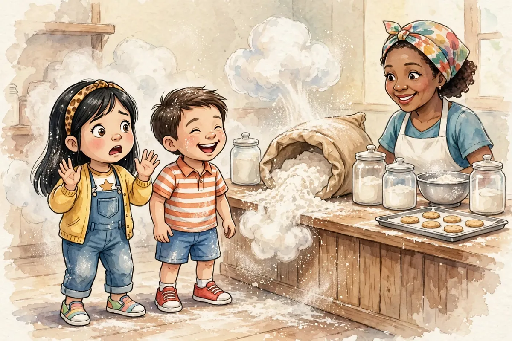
How does Maya feel?
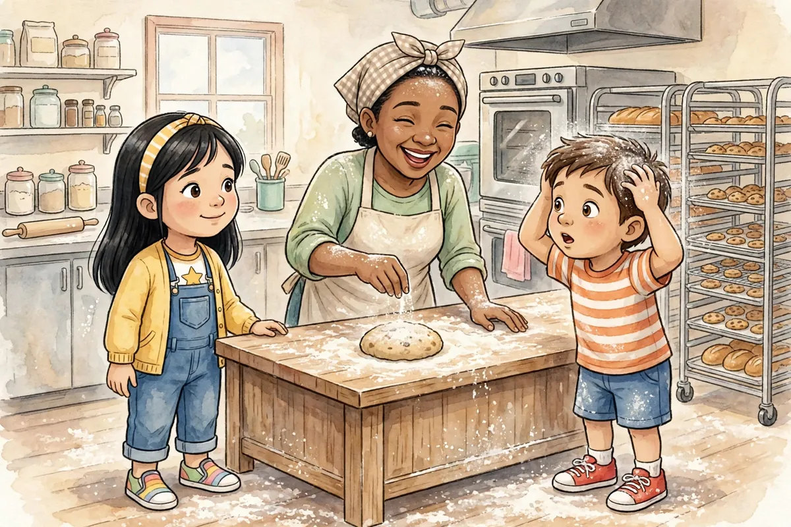
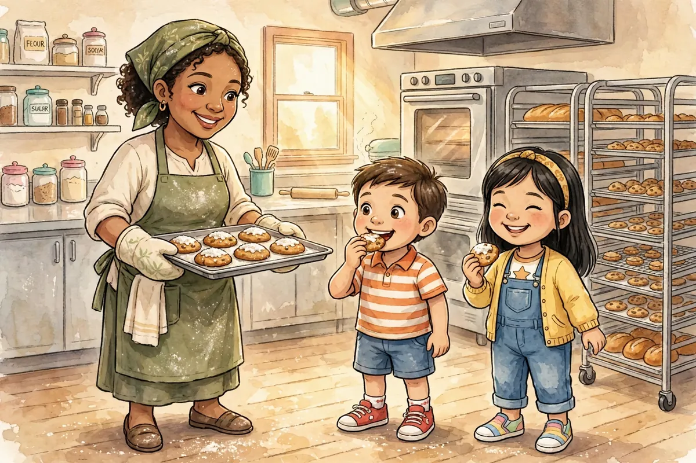
What did Maya learn about mistakes?
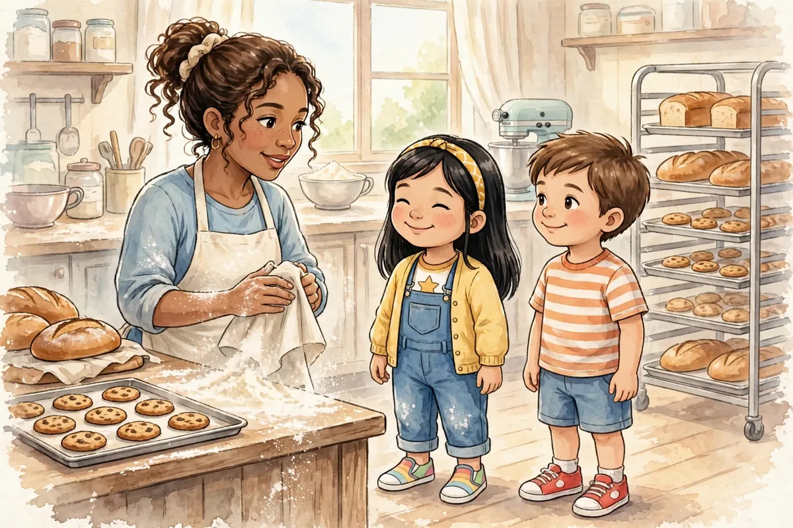
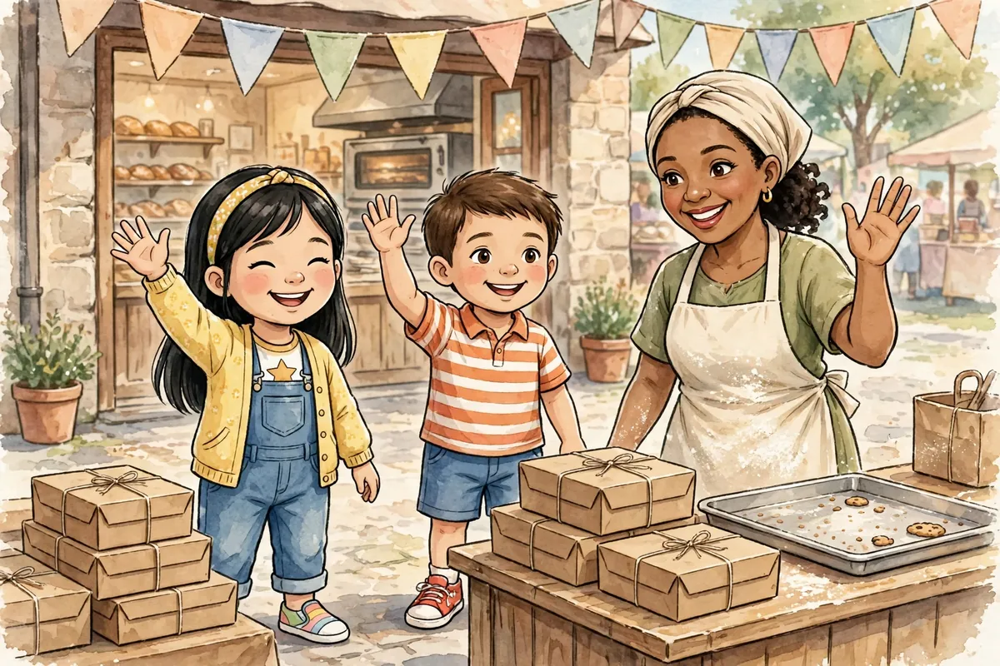
Great reading!
For Grown-Ups
Feeling/skill: Fear of mistakes eases when a mistake becomes something new.
Ask your child: Tell me about a mistake that turned into something good.
Try this: Bake something together and let a “mistake” become part of the recipe.
Words to grow on: dawn, knead, dough, ingredient, measure, level, golden, sprinkle, delicious, worried. Point at the tools as you name them — oven, mixer, scale, measuring cups, rolling pin, piping bag, oven mitts, timer.
The bigger picture: Bakers do much more than bake treats — they start work before sunrise, check their ovens and ingredients, follow recipes and measure with care, practice their skills on practice dough before the real thing, keep their kitchens clean and safe, teach helpers the rules, and feed their whole neighborhood — from everyday bread to birthday cakes.
Standards: W.K.3